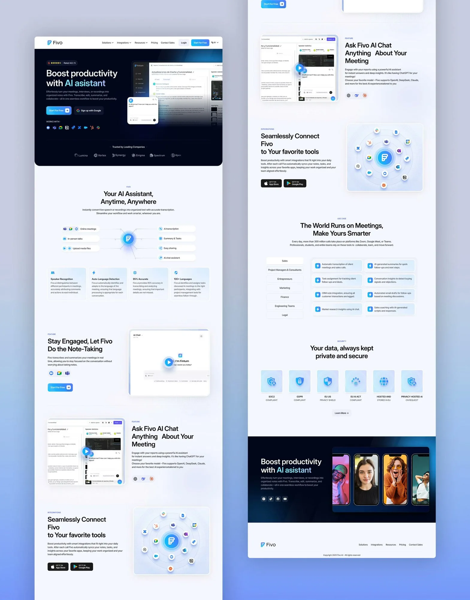

Fivo AI: your meetings, transcribed and organized
Redesigning the marketing site for an AI meeting assistant. Transcription, smart summaries, and team integrations positioned against Otter.ai and Fireflies.
A good product losing people before they ever tried it
Fivo had a working transcription product and steady inbound traffic, but the marketing site and onboarding leaked most of it. People landed, could not tell within a few seconds why Fivo was different from Otter.ai or Fireflies, and left. The team read this as a product gap. The funnel data said it was a positioning and onboarding gap. My job was to make the value legible fast, then carry that clarity into a sign-up flow short enough that people reached their first transcript.
Team leads, PMs, and independent consultants sitting in 4 to 8 meetings a day
An AI meeting assistant: live transcription, structured summaries, and integrations with the tools teams already run
Remote and hybrid work is permanent and meeting load keeps climbing across roles
Desktop web, during and right after calls; the marketing site is the front door
The old homepage to sign-up funnel dropped roughly 7 in 10 visitors, and most never reached a clear reason to stay
Lead with integrations and concrete outcomes, prove trust early, and cut the sign-up flow to its first useful moment
Where the funnel actually broke
I ran three things in parallel: a competitive teardown of Otter.ai and Fireflies, a funnel analysis on the existing site, and eight user interviews with people who take notes in meetings for a living. The methods were modest by design. With a small sample I leaned on triangulation, treating a finding as real only when interviews, analytics, and the competitive read pointed the same way. I did not have a large panel or A/B infrastructure, so I am honest that the testing below is directional, not statistically conclusive.
Competitive teardown
Otter and Fireflies both lead with the integration and the workflow, not the transcription engine. Fivo led with accuracy claims, which read as a commodity feature buyers already assume. The real differentiator, deeper integration into existing tools, was buried below the fold.
Funnel analysis
The steepest drop was on the homepage itself, before any click. A second cliff sat inside sign-up, which asked for workspace details up front. People bailed before they saw a single transcript.
Visitors could not place the product in seconds
In interviews, people skimmed the old hero and described Fivo as "another transcription tool." None mentioned integrations or summaries unsolicited. The thing that made it worth switching was invisible at first read.
Trust was the silent objection
Several interviewees would not connect a meeting tool to their calendar without knowing where recordings live and who can see them. The old site never addressed it, so cautious users quietly left instead of asking.
Use cases were role-specific, not generic
A PM searching past decisions and a consultant exporting billable records want different proof. One flat pitch spoke to neither. Role-anchored examples landed far harder in conversation.
Three people the redesign is built for
These are composites drawn from the interviews, kept specific so design tradeoffs had a face to argue with.
Lena, 34
"I will share AI notes with my team only if I trust them enough not to re-check every line."
- Goals
- Accurate transcripts she can forward without editing, clear summaries
- Frustrations
- Fixing AI mistakes by hand, no sense of where recordings are stored
Marcus, 39
"Two months later I need the decision and the reasoning, not to rewatch the call."
- Goals
- Searchable archive across meetings, action items pushed into his stack
- Frustrations
- Decisions scattered across tools, summaries that miss what was agreed
Priya, 29
"I bill by the hour, so clean records are part of the deliverable."
- Goals
- Time-stamped transcripts, tidy PDF export for clients
- Frustrations
- Note-taking that pulls her out of the conversation, reformatting afterward
What I changed, and what it cost
Each decision below answered a specific research finding. I have kept the tradeoffs in, because the interesting part of senior work is what you give up to get the win.
Lead with integrations, not accuracy
The hero now opens on Fivo fitting into the tools teams already use, with outcomes over engine specs. Tradeoff: accuracy is a real strength, and demoting it risked sounding less capable. I kept a proof point near the fold so the claim still had backing without leading the pitch.
Put trust signals above the fold
Storage location, access controls, and data handling moved up next to the primary call to action. Tradeoff: it adds copy to a hero I wanted lean. I treated it as a conversion lever, not legal fine print, since interviews showed trust was a silent blocker, not a footnote.
Role-specific use cases on one page
Three short, role-anchored sections for the team lead, the PM, and the consultant, instead of one generic pitch. Tradeoff: more page to maintain and a risk of feeling segmented. Anchoring on concrete jobs beat a single message that fit no one.
Cut sign-up to first transcript
Workspace setup moved after the first value moment, so people reach a transcript before being asked for details. Tradeoff: slightly less data captured up front, which sales wanted. Getting users to value first won, and we collected the rest once they had a reason to care.
The redesigned site and onboarding
Integration-first hero, trust signals beside the primary action, role-specific proof, and a sign-up flow trimmed to its first useful step.

Checking it with people before we shipped
I tested the new flow against the old one with 8 participants in moderated sessions, plus an unmoderated first-impression test for the hero. Small sample, so I read these as direction and confidence, not proof.
Old site
Redesign
The role sections were doing the hero's job
In the first build, the integration message and the role examples sat too far apart, and three of eight participants scrolled past the value before it registered. I pulled one concrete role outcome up into the hero. First-impression comprehension moved from the low 60s to the low 80s in the next round, which is what pushed me to ship the order this way.
Deferring workspace setup paid off
Once sign-up showed a transcript before asking for workspace details, participants stopped hesitating at the form. Completion in testing rose and the drop-off that worried sales did not show up, since people now had a reason to finish.
What shipping it did
After launch, sign-up rate rose 52% and bounce dropped 41%, with the redesigned site scoring 86 on the SUS. The gains tracked the two bets directly: leading with integrations and trust got more people past the homepage, and cutting sign-up to its first useful moment got more of them through the form. The redesign did not change the product's accuracy. It changed how quickly people could tell the product was worth their time.
Sign-up rate
Driven by clearer positioning up top and a shorter path to the first transcript.
Bounce rate
The integration-first hero and visible trust signals held more visitors past the first screen.
What I took from it
Positioning is a design problem
The product was fine. What leaked the funnel was how it was framed and ordered. Treating the message hierarchy as a design decision, with the same rigor as the layout, is where most of the lift came from.
Name the silent objection
Trust never showed up as a complaint, because the people it stopped just left. Surfacing storage and access early turned a quiet exit into a reason to stay. The objections users do not voice are often the expensive ones.
Get to value before you ask for anything
Moving workspace setup after the first transcript was the single change with the cleanest payoff. People give you their details once they have a reason to. Ordering the flow around that beat collecting data up front.
Small samples, honest claims
Eight participants will not give you certainty, so I leaned on triangulation and treated the numbers as direction. Being clear about that with the team kept the decisions trustworthy and the conversations grounded.